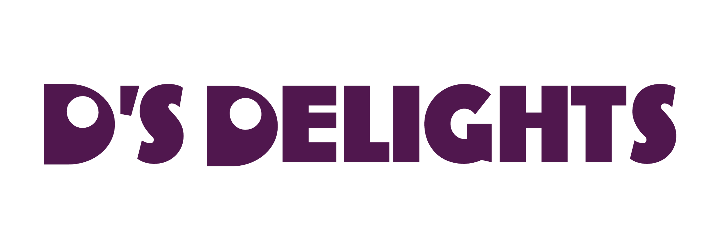
Giving a Brooklyn jewelry brand a digital presence as bold as its pieces.
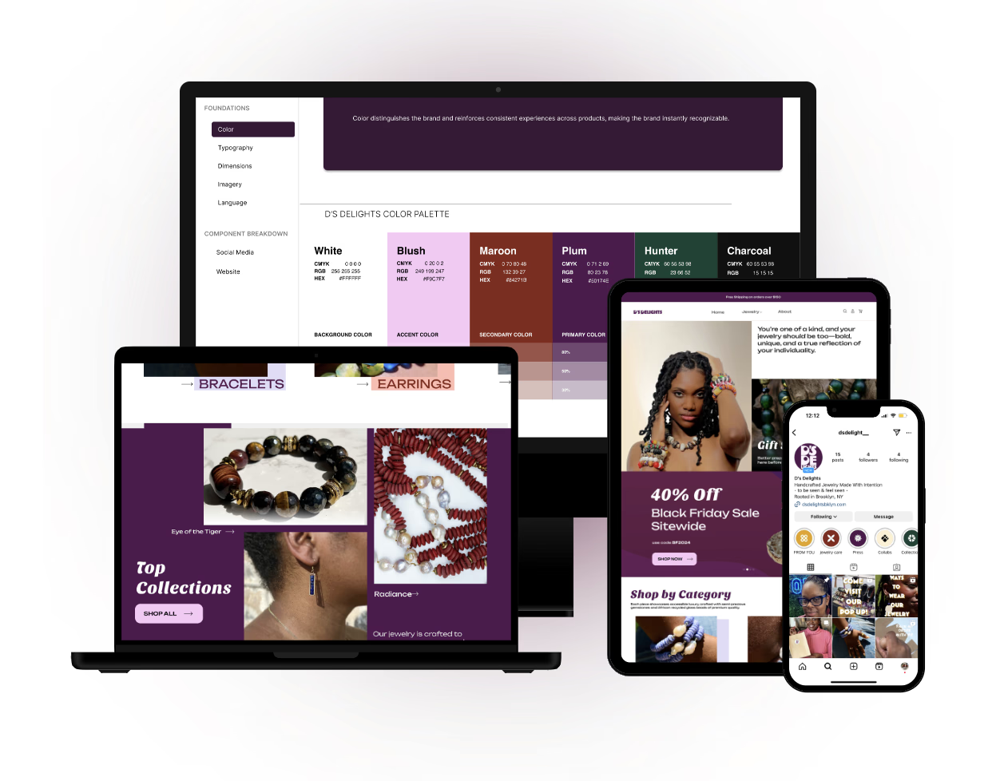
How might we create a digital presence as vibrant and empowering as the jewelry itself?
D's Delights is a Brooklyn based jewelry brand making bold, handcrafted African bead pieces that celebrate individuality. The jewelry is expressive, personal, and full of character but the website and social media presence said none of that.
My team partnered directly with the owner of D's Delights to fix that. Over three months we redesigned the e-commerce site, overhauled the Instagram presence, and created brand guidelines to keep everything cohesive going forward.
The jewelry was doing all the work. The website wasn't helping.
The existing site had usability problems and lacked a clear visual identity to build user trust. When we audited the website and social media and talked to users, the issues were evident.
- Navigation was buried in a hamburger menu. Every single item hidden and hard to discover. Users couldn't browse without hunting for the menu first.
- 28 menu options with no clear groupings. Nobody could find what they were looking for because the categories didn't match how people think about jewelry.
- Inconsistent branding created distrust. Different styles, conflicting type choices, and no visual cohesion made the site feel unprofessional which doesn't convert.
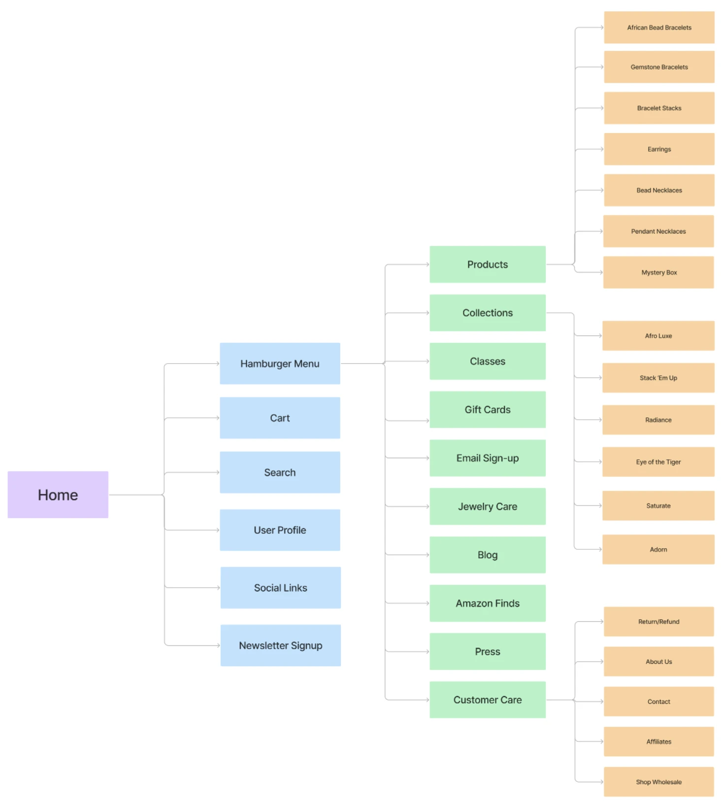
The original site Information Architecture with navigation hidden in a hamburger menu consisting of 28 menu itemsD's Delights jewelry is genuinely special it is handcrafted, personal, and rooted in cultural identity. The design work wasn't about making digital experiences that were pretty. It was about making the website worthy of the product, and giving D's Delights tools to actually use to keep things consistent.
We interviewed 12+ users. The same three things came up every time.
Interviews, surveys, and contextual inquiries with customers and potential buyers gave us clear signal fast. The data wasn't surprising but it was exactly what we needed to make confident decisions.
The numbers pointed to the same insight: people weren't buying because they couldn't picture themselves in the jewelry, and they didn't yet trust the brand. Both problems were solvable through design.
Fixing the information architecture
The 28 item navigation was the most urgent structural problem. We ran a remote card sorting session in FigJam with users to find natural groupings for everything in the site. The result was three clear global navigation categories: Jewelry, Home, and About that matched how users actually thought about the content.
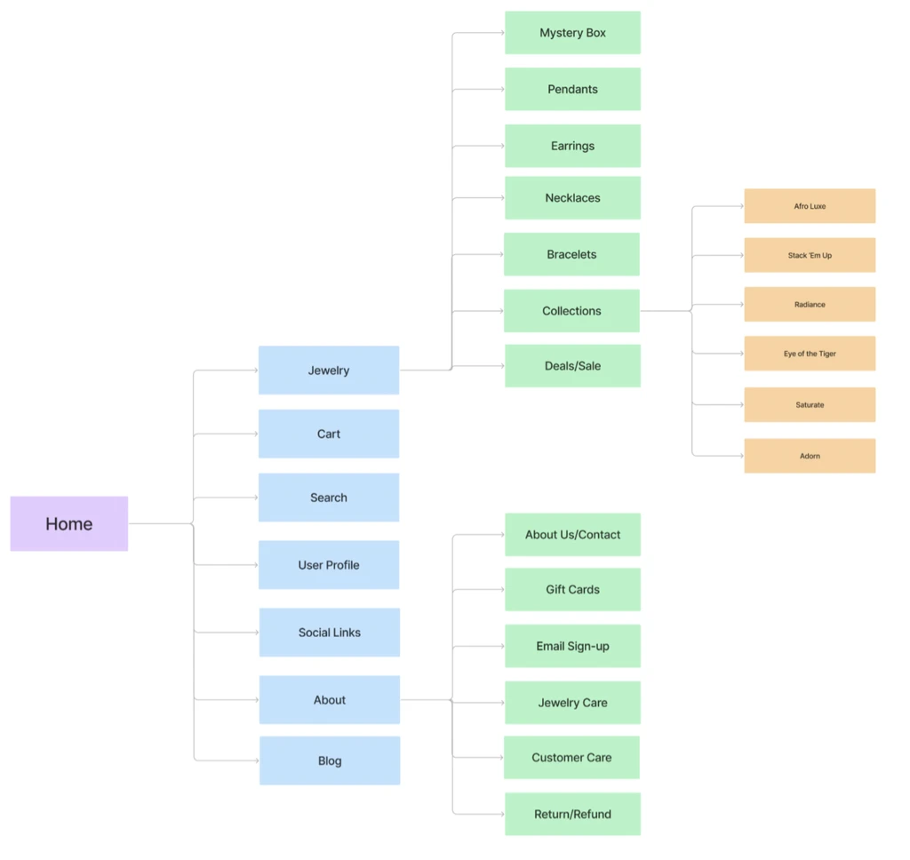
After card sorting 28 items collapsed into 3 intuitive categories that users recognized immediatelyCategories here are simpler and better organized.
— Usability testing participantSketches to A/B tests in three weeks.
We moved quickly because the scope was clear. Low-fi sketches let us explore navigation models and layout ideas before committing anything to Figma. A/B testing with moderated interviews validated the decisions that mattered most.
Low-Fi Sketches
Paper sketches to explore layout directions, CTA placement, and product discovery flows. The goal was to externalize ideas fast and throw out the bad ones before touching Figma.
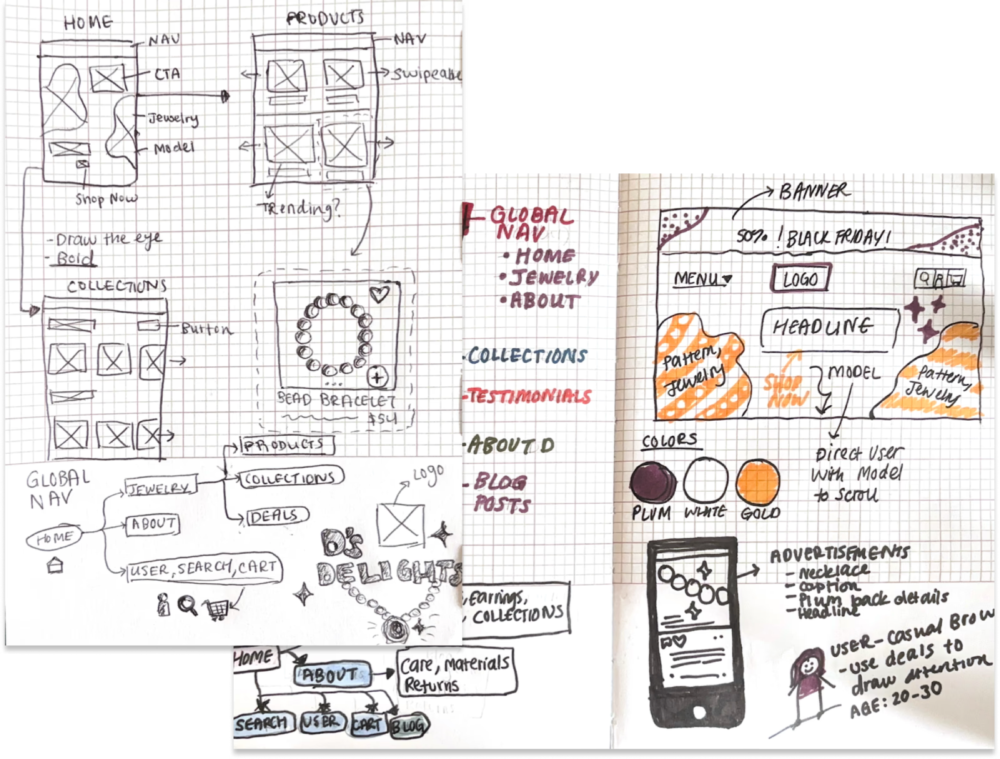
Early sketches of navigation models, product grid layouts, and CTA placement explored on paperA/B Testing
We tested three key decisions with 3–4 moderated interviews each: navigation layout, product filtering, and CTA copy. "Be Bold, Shop Now" won consistently over generic alternatives it matched the brand voice and users responded to it.
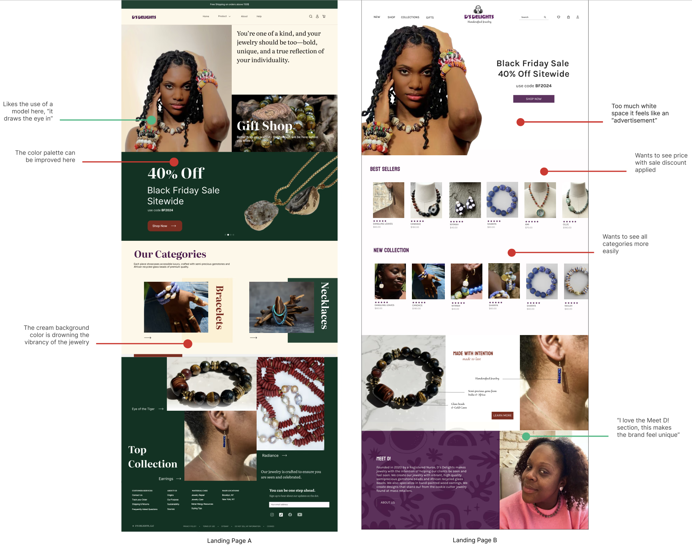
A/B test comparisons of two navigation approaches, two filter layouts, two CTA variants side by sideA website that finally matches the jewelry.
The redesigned site leads with bold visuals, clear navigation, and product discovery that actually works. Every decision traces back to something a user told us.
 The redesigned site with improved navigation, product filtering, and mobile-responsive throughout
The redesigned site with improved navigation, product filtering, and mobile-responsive throughout
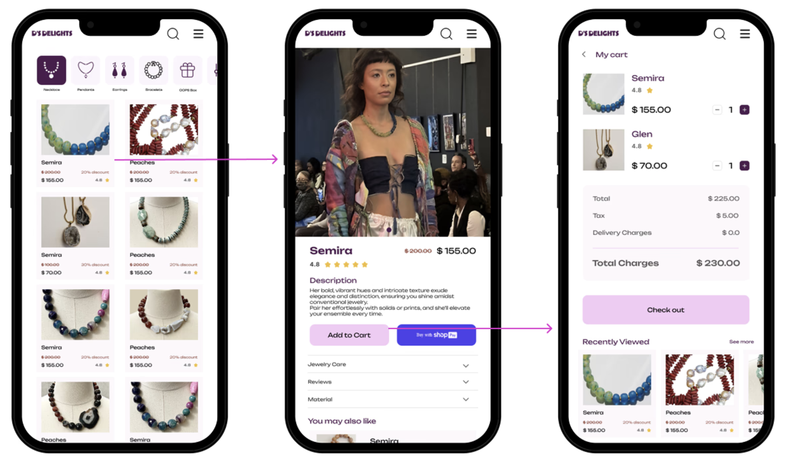
Mobile-first design since the majority of D's customers shop on phonesBrand guidelines
One of the most important deliverables wasn't the website it was the brand guidelines. D's Delights needed to be able to create content independently after the project was complete. The guidelines document every style decision, include reusable templates, and give clear rules for keeping all platforms consistent.
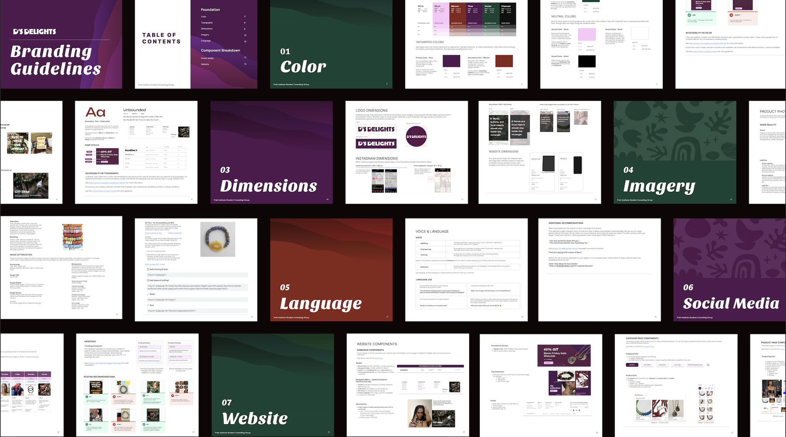
D's Delights brand guidelines of color, type, component templates, and rules for every platform100% positive feedback. Users wanted to stay longer and come back.
We tested the final designs with usability participants and shared the new social content with Deidra's existing followers. The response validated every major decision we'd made.
This version would make me stay on the page much longer.
— Usability testing participantParticipants praised the navigation clarity, the visual boldness, and said the site now felt as trustworthy as the jewelry deserved. Social media followers responded positively to the new branded content with a double-digit increase in engagement.
What I learned
Bold visuals only work when they're anchored in a real story.
The design could be striking, but if users couldn't understand who Deidra was and why she makes what she makes, it wouldn't convert. Every visual decision was in service of making the brand's story legible not just beautiful.
Consistent branding is the single biggest trust signal in e-commerce.
Users told us directly: visual inconsistency made them less likely to buy. Not because they couldn't find what they wanted, but because the site felt unreliable. The brand guidelines were as important as the redesign itself.
Design the handoff, not just the deliverable.
Deidra needed to keep creating content after we wrapped. That meant the brand guidelines had to be genuinely usable written for someone without a design background, with templates she could actually open and edit. Designing for the handoff made the whole project more valuable.
Users kept asking for the real story behind the jewelry. So we gave them that.
Every person we interviewed said the same thing: they wanted to understand the story behind the jewelry. Who makes it, why, and what it means. The original Instagram was all product shots that were beautiful, but impersonal.
We redesigned the entire content strategy around authenticity. Behind-the-scenes process videos, the story behind D's Delights, and customer spotlights. We built a content calendar on the 80-20 rule: 80% value-driven storytelling and 20% promotional.
Post Types
Balanced mix of feed posts, carousels, reels, and video witheach format used for what it does best.
Content Themes
Behind-the-scenes process, meet the creator content, customer testimonials, and cultural context for each collection.
80-20 Strategy
80% value-driven content to build trust and community, 20% promotional to drive conversions.
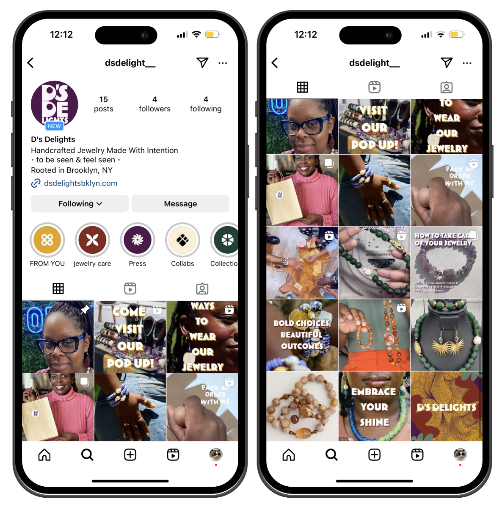
The redesigned Instagram presence with consistent branding, diverse content formats, and authentic storytelling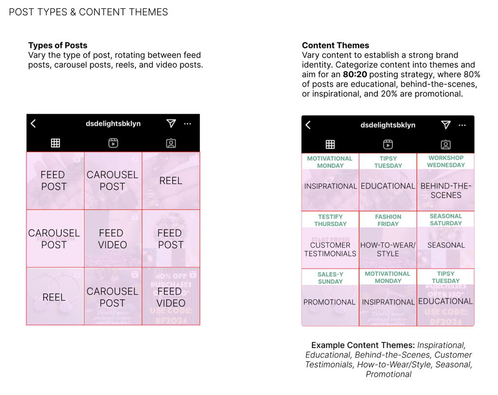
Brand Guidelines cover content variety of feed posts, carousels, and reels planned in advance using a content calendar with Adobe XD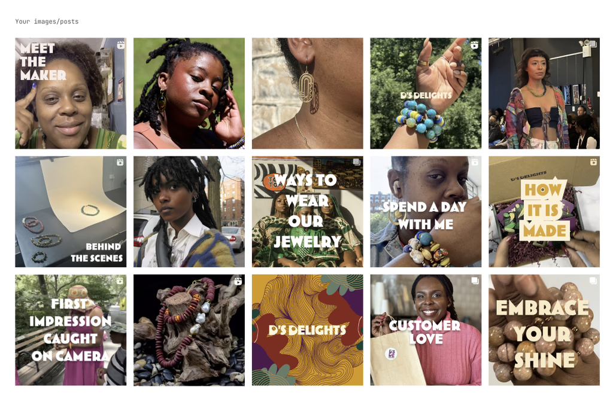
Visual consistency across every post using the same colors, type, and photography style throughout